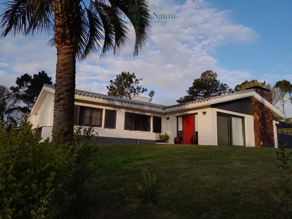

Plan de los Centros Regionales de Profesores
El Plan de los Centros Regionales de Profesores cuenta con un sistema de Beca Total que incluye:
- Transporte (pasajes para viajar cada 15 días al domicilio del residente)
- Alimentación (almuerzo y cena)
- Alojamiento en Residencia
Quienes pueden acceder:
Podrán hacer usufructo estudiantes que se hayan inscripto a una Carrera y/o Especialidad que residan en lugares donde no hay transporte que les permita trasladarse diariamente o están alejados a una distancia de 30 kms o más del CeRP.
Documentación a presentar:
- Completar el formulario de solicitud de beca
- Constancia de domicilio
- Recibos de sueldo o constancia de ingreso del núcleo familiar
(dicha documentación se deberá adjuntar a los demás requisitos de inscripción)
Una vez finalizado el plazo de inscripción, la dirección del centro validará a través del sistema de inscripción web la nómina de postulantes que hayan presentado la documentación probatoria correspondiente, ingresando en cada caso el puntaje de la escolaridad y el de la entrevista realizada. Luego será enviada a la División Estudiantil (Montevideo) la cual procesará toda la información y enviará a cada centro el ordenamiento.
Por más información, comunicarse a través de Contacto o al correo residenciascerpdeleste@gmail.com.
